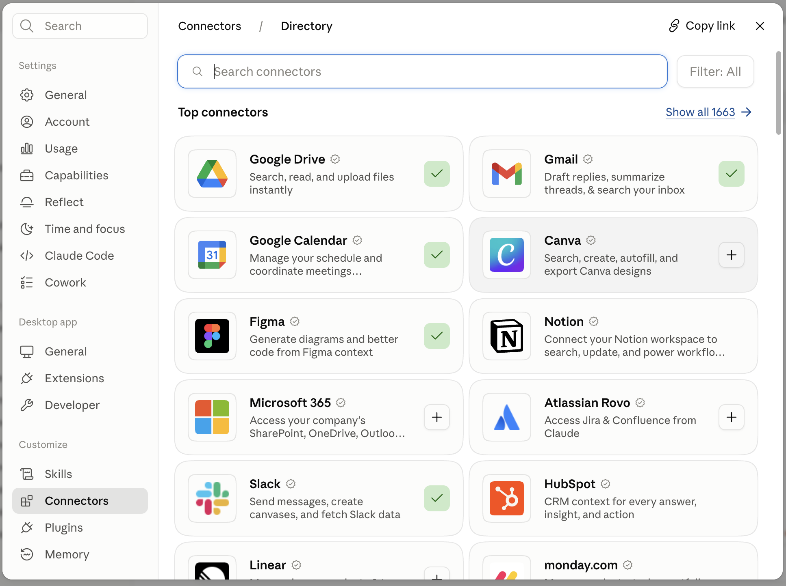
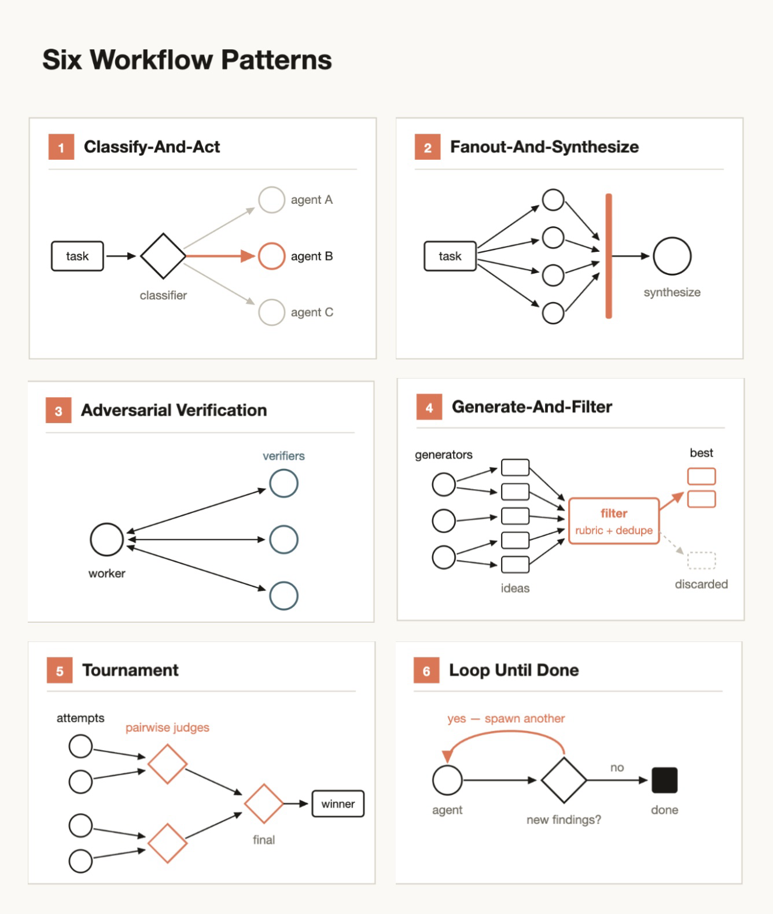

cs- shared styles for The Claude Code Guide for Startups. Paste once at the top of the body. v5
Prefer a PDF?
This guide is also available for download — the same five rules, founder insights, and checklist, laid out for reading offline or sharing with your team.
AI natives working at the frontier
If you want to take a peek at the future of work, ask startups how they are operating today. So we did.
We spoke with more than a dozen fast-growing startups about how they use agentic coding tools to build products and scale their companies. These startups are changing the rules of who gets to build, what gets scrapped, and how to create a flywheel between how you build and what you build.
And they are shipping like organizations ten times their size.
ClickHouse30%more features shippedOmni2–3xengineering productivityClay100%of bug triage automatedArtemis Security6,000+PRs a week
In this guide, we'll dive into the unique deployments of these organizations to learn the rules they follow to ship fast and maintain their competitive advantage.
In doing so we'll also start to glean an answer to the question: what would it look like if an organization built their product development lifecycle with Claude Code from the ground up?
The five rules
- Everyone ships
- Automate the tedium
- Trust, but verify
- Build for rebuilding
- Prototype, dogfood, productionize
Featuring founder insights from

Artemis Security
Cainex

Clay
ClickHouse

Cognition

Commure

Crosby
Emergent
Harvey
Heidi

Higgsfield

Omni

Parahelp

Translucent

Zingage
Tip: Only interested in the practical next steps? We've put a checklist at the end of this guide that consolidates the key technical tips contained in each chapter.
01
Everyone ships
Agentic coding lowers the barrier to entry, so the person who understands the problem can ship the first version of the fix.
Agentic coding lowers the barrier to entry for non-technical employees to build products. With Claude Code, you can create functional features without being fluent in a coding language or how to use an IDE.

"Not only were engineers shipping much more, but non-technical people (like me) were also suddenly shipping UI changes and other product improvements."Mads Lunau Liechti · co-founder, Parahelp
For startup founders this has obvious advantages. For one, they don't have the headcount of their larger competitors so it's "all hands on deck." But it's not just raw capacity that founders are after–these non-technical members of the team bring domain expertise as well.
"Claude Code changed what it meant to be a lawyer at Crosby. The lawyers have the best product insights, because they are the users. It's been amazing to watch them cook."Ryan Daniels · co-founder and CEO, Crosby
We heard the same thing from Dr. Thomas Kelly, co-founder and CEO of Heidi.
"For us, Claude Code solved the broken telephone problem. The way a new idea used to move through a team was the person with the idea tells a PM, who tells a designer, who then tells an engineer… and inevitably the essence of the idea gets lost in that chain. By the time something shipped, it often didn't resemble what the person had in mind. And it took weeks. Claude Code collapses that chain. The person who actually understands the problem can ship a PR bringing in designers and engineers for the parts where their expertise matters."Dr. Thomas Kelly · co-founder and CEO, Heidi
Saying "everyone ships" makes for a great LinkedIn post, but how does that work in reality? Is the marketing team approving pull requests? Is the legal team working through the intricacies of bisecting flaky tests?
The answer we got is that there is still a division of labor. Marketers still focus on marketing and developers still focus on developing. But the all important first step of getting an idea to working prototype, of going from 0 to 1, is open to everyone.
We also saw the most effective startups create mechanisms to make these contributions systemic rather than leaving it to chance or individual ambition.
Create connections
It's one thing to create expectations for employees to use AI, it's another to give them access to Claude Code and the tools they need.
"We're actually not running away from [having non-technical employees contribute], we're going towards it. Our take is every role is becoming an engineering role because you can build software for it… so we hire people who are tinkerers, who are interested in building"Kareem Amin · co-founder and CEO, Clay
At Crosby, the team didn't bring lawyers to Claude Code, they brought Claude Code to the lawyers by connecting it to the tools and operating systems they were familiar with and worked in every day.
Tip: Claude can't understand what it can't see. One of the most effective ways to extend Claude's value is to connect it to sources of truth and the tools your team uses every day.MCP is an open source standard for AI-tool integrations that give Claude Code access to your tools, databases, and APIs. Explore adding these connections whenever your team finds itself copying and pasting information from a tool into Claude.Connecting via CLI can be more token-efficient when a mature command-line tool already exists (gh, kubectl, bq, psql) and you want Claude working against the same ground truth your engineers do.

Standup showcases
At some point, ideas need to be given the opportunity to be prioritized so that organizational resources can help bring them to market. That road is clear for product managers—it's their job after all—but not as clear for non-technical employees.
Clay creates quarterly reviews where prototypes are considered and can enter the formal roadmap. This is how a go-to-market team member at Clay built an autonomous agent that visits your websites, fills out your lead-capture forms, times how long it takes to respond, rates the experience, and generates a performance report.
Omni has a dedicated Slack channel for Claude generated prototypes with contributions from everyone including senior technical staff. They also practice the corollary of "everyone ships," which is "everyone talks with customers."
Even though engineers don't naturally gravitate toward customer calls, Omni deliberately puts them in front of customers because it closes the feedback loop faster.Chris Merrick · co-founder and CTO, Omni
Share skills
The line between "everyone ships" and "piecemeal" can be a thin one. Feature prototypes, whoever they come from, still need to be integrated into a product that feels like a cohesive whole. This is where skills, reusable instruction files that encode your team's standards and context, can help ensure development stays aligned even as the process becomes increasingly democratized.
"Anyone on the team can draft product components, marketing collateral or deck material from Claude Code using our design system as reference. AI that touches the product must clear a much higher bar, which Claude Code helps us meet with more precision," said Dr. Thomas Kelly, Heidi.
They can also get new developers and non-technical employees onboarded and up and running quickly.
"...we also have a GitHub repo of Claude Code skills which works as a shared knowledge base to quickly bootstrap a Claude Code session with known Emergent details like database [and data warehouse] location, some schema [information], overall company context….instead of trying to be perfect here, it is ok to live with slightly outdated context files as long as the agent can quickly verify and course correct."Mukund Jha · co-founder and CEO, Emergent

"Our engineers use Claude Code to spin up an in-house marketplace of specialized internal agents, organized by role, so engineering, delivery, and sales each get tools built for how they actually work."Jack O'Hara · founder and CEO, Translucent
Tip: Skills can be shared across the company using a directory so one employee's best practice can be instantly transferred to another. Use CLAUDE.md files in each subdirectory of your repo for coding conventions specific to that subdirectory that apply every time. Use skills for on-demand procedural workflows. For more information, read: Steering Claude Code: when to use CLAUDE.md, skills, hooks, and subagents.
02
Automate the tedium
Agents own the mechanical 80% of the lifecycle so engineers spend their time on the cases that actually need judgment.
All companies have sought to gain efficiencies through technology since the dawn of the industrial revolution, but these startups separated themselves by the speed and depth of their adoption.
These founders believe AI is an essential component of their mission. Many are explicit that agents own the mechanical 80% so engineers spend their time on the cases that actually need judgment.
"Everyone's racing to build AI products. Far fewer are rebuilding how their company actually runs. The second one is the bigger unlock. Artemis Security runs as an AI-native company, not a company that happens to use AI. This supercharges our velocity and allows us to help customers stop attacks at machine speed."Shachar Hirshberg · co-founder and CEO, Artemis Security
Specifically, we saw AI more tightly integrated across their SDLC stages than others as well as more purpose built agents designed to take recurring tasks end-to-end. Let's look at a couple examples of both.
AI-native SDLCs
Many of these featured startups have implemented means of accelerating their teams' onboarding into their agentic coding processes. For example, at Emergent, Mukund told us, "on day one, a new hire bootstraps their entire dev setup by pointing Claude at the right markdown file. If Claude hits anything broken or out of date during onboarding, it updates that file."
Tip: Code Review (research preview) is a managed multi-agent service in Claude Code. It runs an automated review pass on PRs in the repos you enable. You can manually fix the finding and push, or close the loop by commenting @Claude on the finding (if you've set up and configured GitHub Actions).

These engineers need to be onboarded quickly because these teams ship fast.

"Engineers here are orchestrating agent fleets, shipping fixes to production data problems the same day they're found, and running multiple PRs in flight simultaneously. One engineer ran a ~13-ticket initiative with Claude subagents in parallel, each owning a ticket and its PR."Tanay Tandon · CEO and founder, Commure
At these organizations, Claude Code not only helps generate code, but reviews it too. "We run automated code reviews against our vetted technical and compliance frameworks, flagging critical issues and routing suggested changes to the right reviewers before anything ships," said Dr. Kelly of Heidi.
Some of these organizations have also built custom agents for code review, testing, and CI. These startups have placed considerable attention on building loops vs just deploying code.
"My favorite [agent] is the "Translucent code reviewer," which fans out across a change, reviews it from multiple angles, and synthesizes the results the way one of our senior engineers would but faster than any one person could," said Translucent founder Jack.
Clay "...built an agent that handles…bug triage, from first pass to suggesting code changes for fixes," said Kareem.
Tip: For the last several months Claude Tag has been the on-call first responder for CI/CD failures at Anthropic. Claude authored the first situation report in every recent incident that had one, typically publishing its first analysis within 15 minutes.Claude Tag has its own service account and access to the tools an Anthropic CI engineer needs such as Datadog or Grafana. Standing instructions are in markdown files as skills, committed in a GitHub repository. This way multiple teammates can iterate on them and we can manage changes just like we do code.

This was most pronounced at ClickHouse, where co-founder and CTO Alexey Milovidov reported the database company had turned nearly every SDLC stage into an autonomous loop. Two purpose-built agents designed to fix flaky tests and find missing test coverage are now the #2 and #3 contributors to the ClickHouse repo. A separate family of agents handles operations, and the team uses Claude Code to build and iterate on those agents themselves.
Accelerating processes with agents
Another consistent pattern was that these startups were not only using agentic loops in Claude Code to accelerate their development efforts, but they were also creating agents to accelerate recurring and often tedious processes.
This was often routine work so that more attention could be focused on their competitive advantage, customer relationships, and on top-line growth. One of the most common processes we saw accelerated by Claude was self-service data analytics.
Nearly every one of these companies had some process in place so they could make quick decisions with fresh data, including unstructured data, that fuels the pivoting so essential in the life of a startup.
For example, Clay built an internal analytics agent and Heidi uses Claude Code to categorize customer and clinician feedback alongside usage data to surface signals that matter for product insights.
Both ClickHouse and Omni ship products that package this type of AI data analysis within them, all powered by Claude.
Other examples include summarizing thousands of legal documents with subagents (Crosby), sweeping claims data to flag anomalies across sites (Commure), and continuously mining hospital financial data for warning signs no analyst team could catch in time (Translucent).
Tip: Dynamic workflows can be used to fan multiple subagents to analyze large amounts of data in parallel or to conduct an adversarial review of another agent's work. When using a model like Claude Opus or Claude Fable say "fan out multiple subagents," or "use a workflow."

03
Trust, but verify
You can't automate a process unless you have a reliable means of monitoring and verifying the outcome.
This rule is the necessary corollary to Rule 2: Automate the tedium. You can't automate a process, unless you have a reliable means of monitoring and verifying the outcome.

Artemis Security co-founder Dan Shiebler said their increased deployment speed only works…"because we've invested deeply in testing infrastructure, codebase organization, and team knowledge systems that let agents ship end to end. This is the flywheel we've built with Claude: structure your codebase, knowledge base, and team the right way, and every contribution compounds."Dan Shiebler · co-founder, Artemis Security
"Early on we gave Claude full autonomy and it did what AI does. It shipped plausible code fast. The problem was it drifted from our architecture in ways that looked right but weren't. So we…wrote down every invariant. How we frame problems. What has to be true no matter what. How to prove something works instead of trusting a confident answer. 567 lines of how this team thinks."Victor Hunt · co-founder and CEO, Zingage
Tip: Put what can't change in CLAUDE.md at the root of your repo. Claude reads it at the start of every session, so your architecture rules, security boundaries, and non-negotiables travel with every session.
To be clear, none of these startups are having agents merge to main and hoping for the best. Many of them operate in highly regulated industries and require strong governance frameworks. Cainex is a particularly illustrative example of combining agents with deterministic checks to read medical records and generate codes that direct hospital billing.
"In medical coding, a wrong code isn't a typo. It's a billing and compliance event. That one fact governs how we build."Uriah Israel · co-founder and CTO, Cainex
"Here's the loop Claude Code runs for us. We process a batch with an agent, and our auditors review the output in an internal app. They don't just see the codes. They see the model's reasoning, and they comment on both….Everything is versioned and auditable," he said.
"Then Claude Code takes over. It reads the original predictions, along with every correction and comment, straight from the database. Each correction is tagged by the kind of code involved, so Claude Code knows whether it's looking at a diagnosis issue, a procedure issue, or another category, and it can go straight to the guidance that governs that specific kind of coding.
From there, it finds the part of the agent's instructions that produced the mistake and revises it, or writes new guidance when the case is genuinely new. Every change is made against a versioned set of instructions and tested against the records that failed. The rule we enforce: fix the principle, not the example," he continued.
"Then the back-test. A record can have more than one acceptable coding, so it's not a string match. The check combines semantic matching against our accepted sets with a judge that asks, 'Is this a real error or just a different valid path,' and Claude Code adds its own comparisons on top.
It runs the candidate change across a golden set plus random samples and surfaces any regressions before anything ships. What comes back is a short list: suggested edits, the records it couldn't resolve, and the questions it wants answered. Engineers spend their time on genuinely hard cases rather than the mechanical 80%," he said.
There are many generalized takeaways that founders can glean from this healthcare billing specific workflow.
For example, Cainex uses subject matter experts to routinely review and guide Claude's reasoning, and ensure that guidance becomes part of a self-improvement loop. However, those experts aren't there to fix example by example, their guidance is used as part of a self-improvement loop. As Uriah puts it "fix the principle, not the example."
Tip: Loops are agents that repeat cycles of work until a stop condition is met. They can be effective ways to use Claude Code for more autonomous or long-horizon work. You can use skills to define what criteria the agent needs to meet (the more clearly defined the better) and have the agent iterate until it reaches its goal.For example, many organizations create flaky test agents, or loops, because the stop condition is clear and self-contained: the agent can verify its own fix by rerunning the test until it passes.

The other takeaway is the diligence placed on maintaining a strong evaluation "golden set," or group of verified question answer pairs the team uses to verify the agent's accuracy. Every startup should maintain multiple sets of evals for their key use cases, and update them regularly, so they can prevent drift and evaluate future models.

"[Claude Code has] also transformed how we manage model velocity. New video and image models arrive constantly. Each requires new skills, evaluations, routing logic, and production testing before deployment. Claude Code has compressed that cycle from days to hours, allowing us to identify issues in production and deploy fixes in the same session….When you're competing against companies with 10x the headcount, that kind of leverage changes everything."Alex Mashrabov · co-founder and CEO, Higgsfield
Tip: When teams first start building agents, they can get surprisingly far through a combination of manual testing, dogfooding, and intuition. The breaking point often comes when users report the agent feels worse after changes, and the team is "flying blind" with no way to verify except to guess and check. Teams can't distinguish real regressions from noise, automatically test changes against hundreds of scenarios before shipping, or measure improvements. For more information read: Demystifying evals for AI agents.
The final point Uriah makes is that this process can take some work. "It didn't start this clean. Our first version overfitted. It would 'fix' things by encoding the specific case, and we were accumulating patches instead of getting smarter. We changed the approach to force general principles and to cap how many specifics can enter a change at all."
Tip: AI agents are not deterministic, but a lot of highly regulated work requires processes to be done the same way every time. Claude Code has features that can help combine frontier intelligence with deterministic processes.Hooks are user-defined commands that fire at fixed points in Claude Code's lifecycle and can serve as hard gates. They execute every time regardless of what the model decides. For example they can be used to block a write that fails a lint, require a test pass before commit, or strip secrets before anything leaves the sandbox.Dynamic workflows orchestrate subagents with deterministic sequencing, separate context windows, and focused goals. /goal is helpful for long complex tasks where Claude may prematurely call the job done, prefer its own findings when reviewing, and drift from its original goals.
04
Build for rebuilding
Model capability keeps shifting underneath these teams, so very little is treated as permanent.
Many of these AI-native startups are in a state of constant reinvention.
AI is often at the heart of what they are building as well as how they are building it. Since model capability continuously evolves, groundbreaking features and critical scaffolding were discarded the minute they became sunk costs. Many of these organizations saw this constant rebuilding as part of their competitive advantage.
"What we do at Clay is you build it and then you build it again and then you build it again. And then the fourth time you build it, you know everything that's needed and you get it right. And so we don't necessarily throw away things. We just rebuild it: and this time with more clarity," said Kareem.
"A rebuild isn't done when the new path ships. It's done when the old path is gone. Teardown always lost the prioritization fight before: it's tedious and it ships no features," said Commure co-founder Tanay. "Now one of Commure's engineers just invokes a Claude skill to the tune of 'for every feature flag already released to everyone, open a PR removing it and the associated code,' then the engineer reviews what comes back. Migrations that used to eat a lot of dev cycles are now a plan and a fan out, done in a couple of hours."
Tip: Use git worktrees to run a rebuild in an isolated copy of the repo while the current version stays untouched. Claude Code can spin one up for you — you get v2 running next to v1, run your evals against both, and only merge when the new one wins. This is what makes "build it four times" cheap.

Each linked worktree is an ordinary directory with its own checked-out branch; all three share the single .git object store inside acme-web.
Kareem also described part of Clay's moat as the ability to constantly rebuild, evolve, and create self-improvement loops.
"I think the moat for any company right now is that it needs to be self-improving. So Clay is a self-learning revenue engine. So the more you use this, the more we know who your best customers are, what should you say, what's worked, what hasn't and that's changing over time," he said. "The race is really, whoever can get to the distribution fastest… so you can help each [customer] so that you can self-improve."
At a May 2026 Code with Claude event, Niko Grupen, Harvey's Head of Applied AI spoke about how each new wave of model capabilities — emergent reasoning, agentic automation, planning and orchestration — required a full re-architecture of the platform.

"If you asked me six months ago what our architecture looks like, I'd give a fundamentally different answer from what it looks like today. If we hadn't been willing to say 'Hey, we need to scrap this and go agent native' we simply could not have these capabilities in our platform right now."Niko Grupen · Head of Applied AI, Harvey
At the same event, Cognition co-founder Walden Yan said:

"The way of life of building AI right now is accepting that the thing you build today is very likely going to be scrapped in six months to a year.... [Devin] was very much not possible with the set of models we had two years ago, [but the bet was] this may not work today, but it will soon."Walden Yan · co-founder, Cognition
Tip: For non-trivial rewrites, start Claude Code in plan mode (--plan or hit Shift+Tab). Claude will explore the codebase and propose the rebuild approach before writing any code — you approve or redirect. It's the cheapest place to catch a rebuild that's about to drift from your architecture.
05
Prototype, dogfood, productionize
Building with AI helps these startups create disruptive products with AI — the flywheel at the heart of their process.
Many of these startups have a key flywheel at the heart of their development process. Building with AI helps them create disruptive products with AI.
When developers advance their agentic coding practices, they have a stronger grasp on the model's capabilities and insights into how harness design evolves at the frontier. They can then use this inspiration in their own agents and products.
"We took inspiration from [Anthropic's] file vs embedding approach, which emboldened us to keep things simple in our own product. We avoided a lot of complexity that would have come from a RAG pipeline," said Chris, Omni. "We also saw how Claude Code's harness was enabling users to do things in parallel and adapted some of those concepts into our own UI."
It also helps them stay attuned to their own product performance.
"Because our app builder also uses Anthropic models behind the scenes, if we ever see a behavior on our product… we can quickly debug locally via Claude Code to tell whether it's model behavior or a harness issue. This has tremendously helped improve our triage cycles," said Mukund, Emergent.
The pattern we heard repeatedly was build an internal agent with Claude Code, use internally (dogfood), and depending on the response, promote to a customer facing product often using the Claude API, SDK, or Claude Managed Agents.
"We built our own AI agents [in our product] that teams interact with directly, including an agent in the SQL console and an AI SRE. We use Claude Code to build and iterate on these agents themselves. The tooling that powers our customers' AI experiences is, in part, built with AI," said Alexey, ClickHouse.
The Checklist
This guide covered a lot of ground. Here are the key tips consolidated on one page:
Chapter 1: Everyone ships
Claude can't understand what it can't see. Connect it to sources of truth and the tools your team uses every day via MCP or CLI.
Create a company plugin marketplace so one employee's best practice can be instantly transferred to another via a skill. Use CLAUDE.md files in each subdirectory of your repo for coding conventions specific to that subdirectory that apply every time. Use skills for on-demand procedural workflows.
Chapter 2: Automate Tedium
Set up Code Review (research preview) on a repo for an automated review pass on PRs.
Make Claude Tag (public beta) part of your CI/CD on-call response and bug triage.
Dynamic workflows can be used to fan multiple subagents to analyze large amounts of data in parallel or to conduct an adversarial review of another agent's work.
Chapter 3: Trust, but verify
Put what can't change in CLAUDE.md at the root of your repo.
Use loops, agents that repeat cycles of work until a stop condition is met, for more autonomous or long-horizon work.
Establish a process for creating and maintaining agent evaluations.
Hooks are user-defined commands that fire at fixed points in Claude Code's lifecycle and can serve as hard gates. Use these when components of the work need to be deterministic.
Chapter 4: Build for rebuilding
Use git worktrees to run a rebuild in an isolated copy of the repo while the current version stays untouched. This is what makes "build it four times" cheap.
For non-trivial rewrites, start Claude Code in plan mode (/plan or hit Shift+Tab). Claude will explore the codebase and propose the rebuild approach before writing any code — you approve or redirect. It's the cheapest place to catch a rebuild that's about to drift from your architecture.
Startups on the frontier build at the frontier
These insights come from your peers building at the frontier and we hope you found them practical and actionable. The Claude startup community is a constant source of inspiration, best practices, and advice. You can join this community by:
- Subscribing to the Startup Newsletter and joining the startup program.
- Bookmarking upcoming Claude Code webinars.
- Attending an event near you
- Contributing on Reddit and Discord.
- Early-stage companies can also apply to the Claude for Startups program for credits and support.